Our Founder- Jia Hui
Jia Hui is a nursing student from Malaysia and the founder of the Da Yi Ma Project. She believes that menstruation should be understood, accepted, and talked about without shame.
Her journey began when she searched for alternatives to disposable pads and tried using a menstrual cup—an experience that revealed how little guidance and education around menstrual health exists. Realising that many girls and women face even greater barriers, Jia Hui shifted her focus from products to education.
She founded the Da Yi Ma Project, named after a Chinese slang term for menstruation, to reclaim the conversation and break taboos. Through menstrual hygiene workshops and community programmes for children and teenagers of all genders, she works to promote accurate knowledge, dignity, and equal access to menstrual care—while also addressing environmental sustainability.
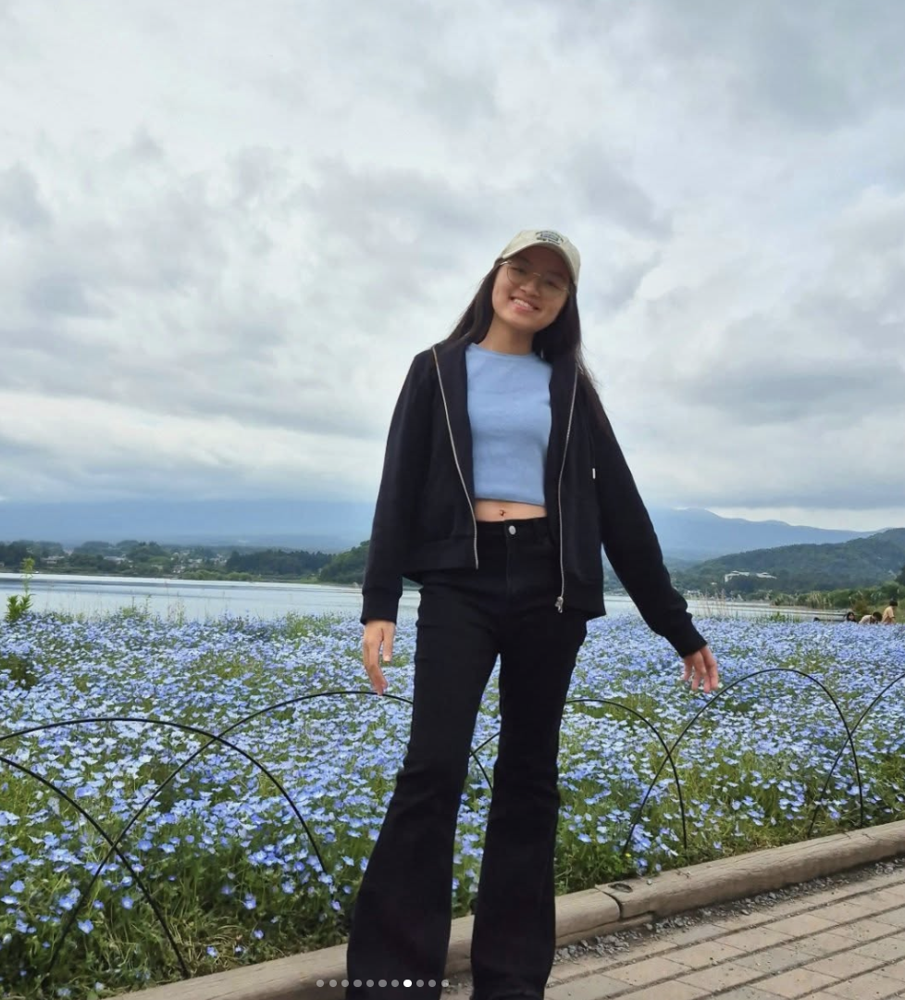
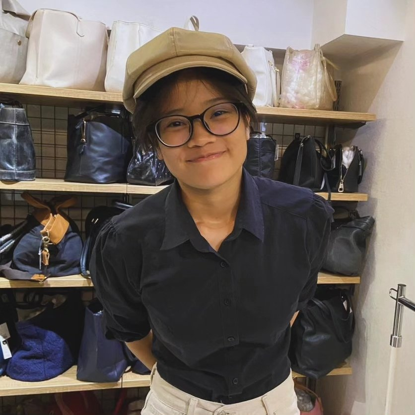
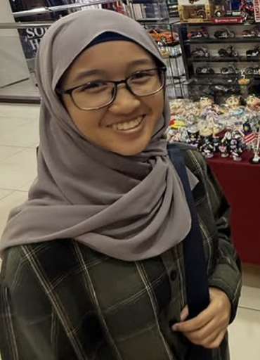
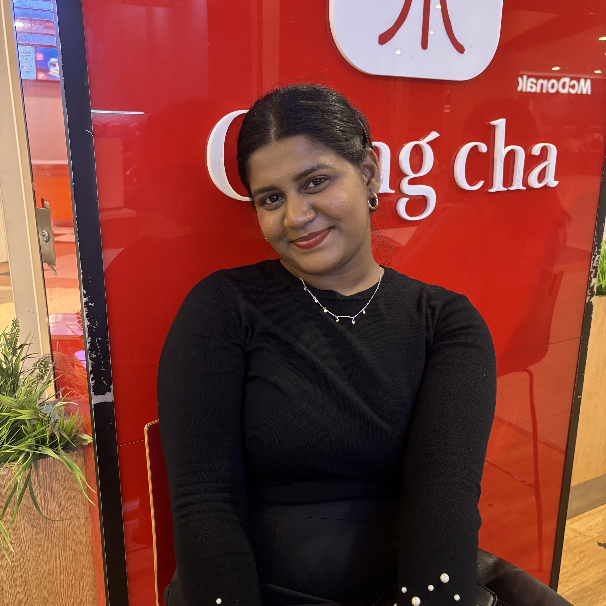
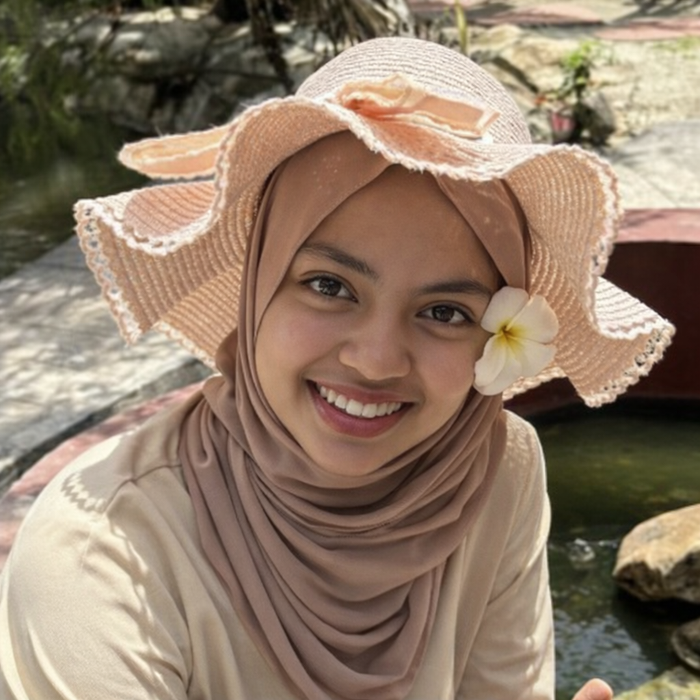
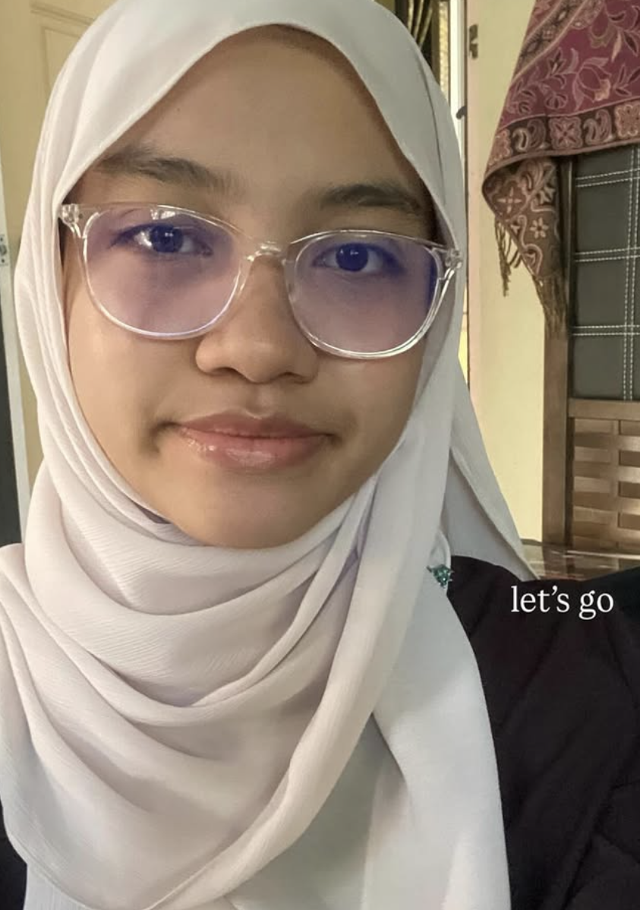
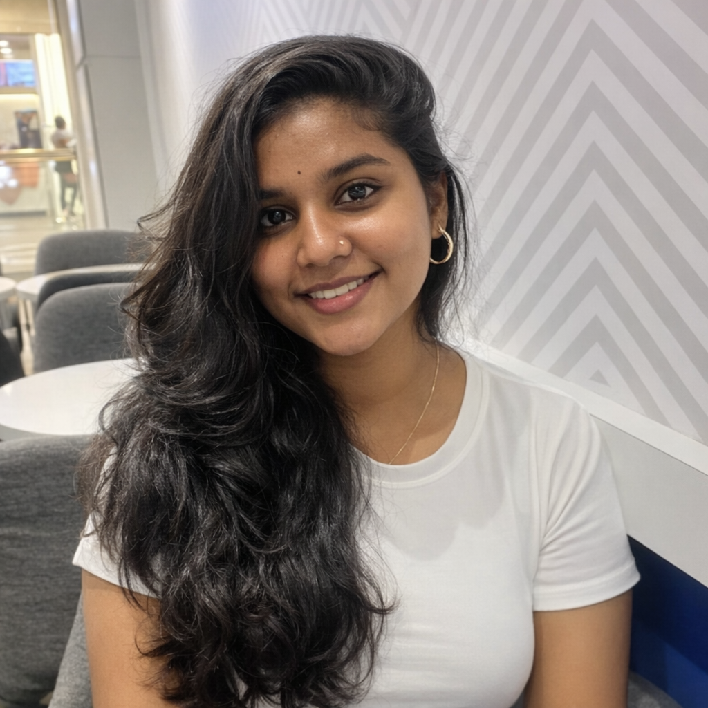
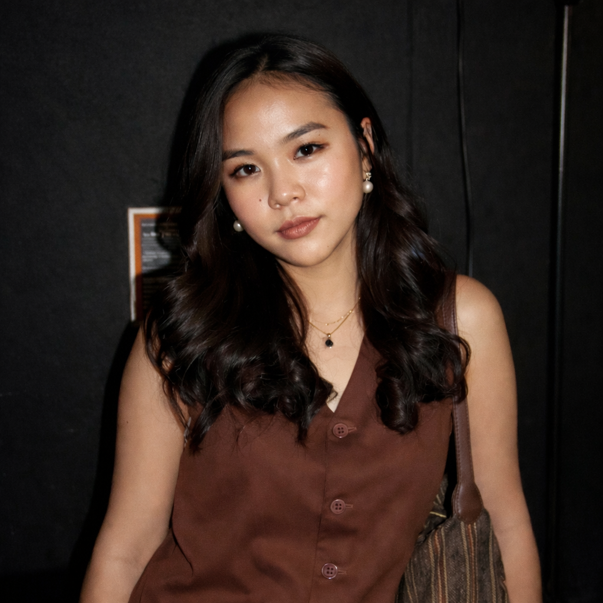
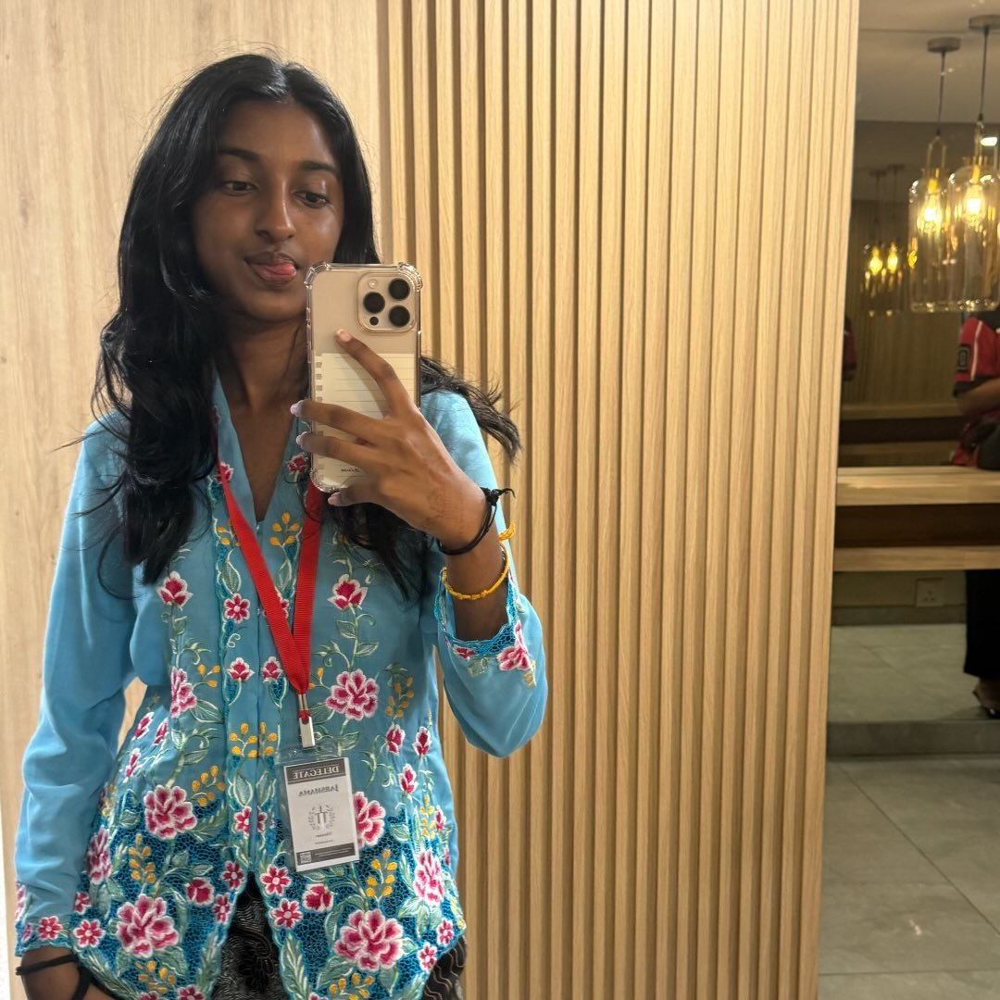
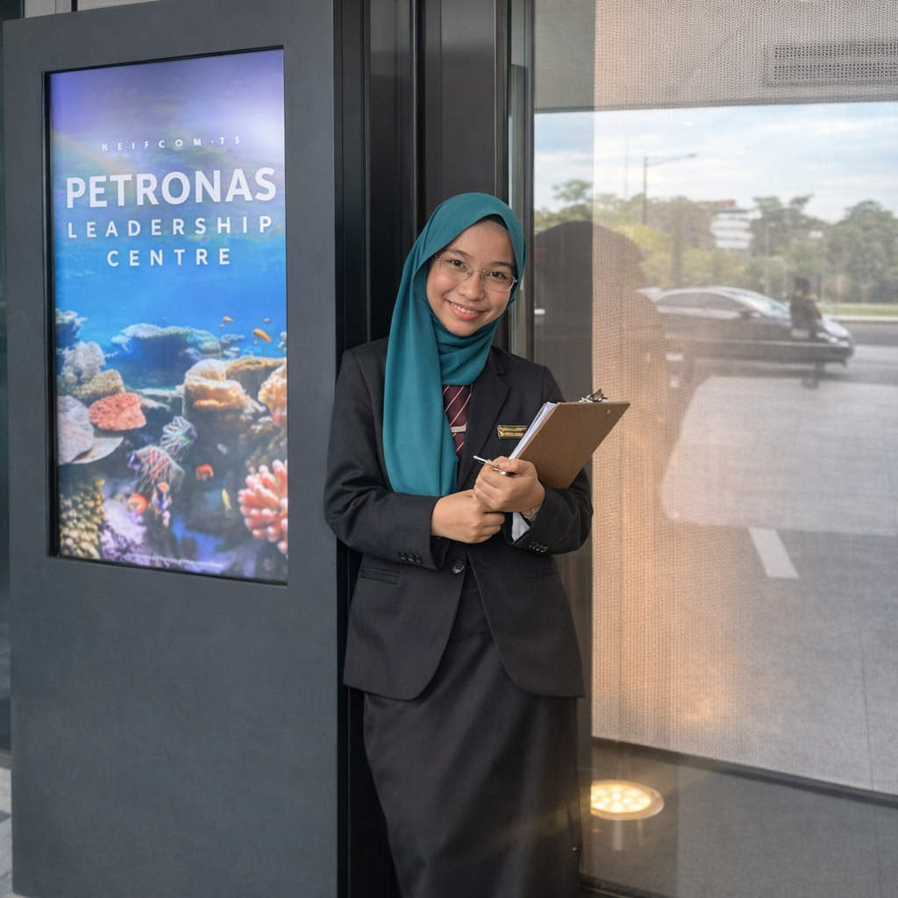
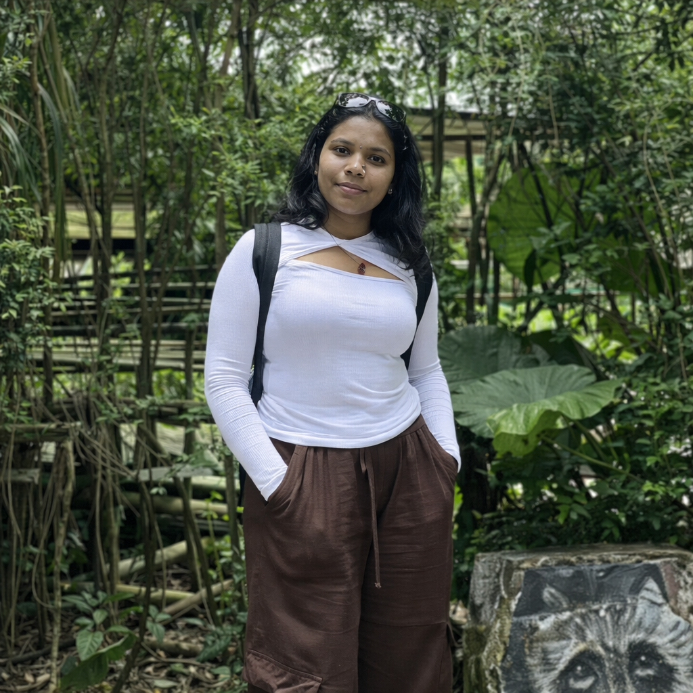

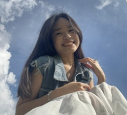